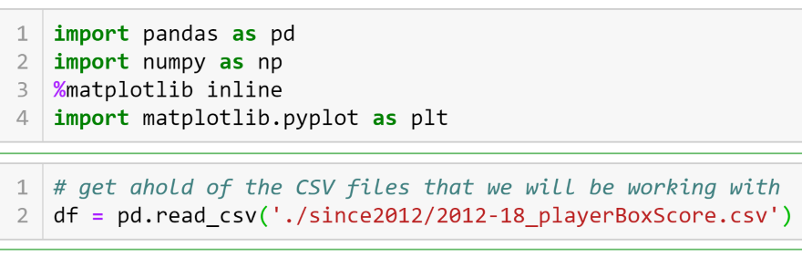
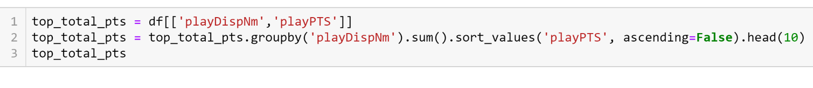

Here at NBA-SICS a variety of NBA data hs been manipulated, analyzed, and displayed in an easy to read format. It is our belief that sports statistics is a fun and easy way to learn the basics of data analysis. We hope people will find the information on this site both interesting and informative. Get an understanding of the programs that we will be using and of how we get our data here on the homepage and then go on to navigate the site as you please.
The first program you will need to download in order to do the kind of analysis seen on this site is called Anaconda. Anaconda is an open-source prgram that easily allows you to work with multiple coding programs / languages which makes it easy to transition from one program to another. You can download Anaconda at the link above. One of the packages included with your Anaconda download is called Jupyter Notebook. It is in Jupyter Notebook that we will perform all of our analysis.
In addition to Jupyter Notebook, you will need to set up a Conda Environment on your machine. You create this envirnment on the command line of your computer. Follow the instructions HERE to create your conda Environment. There are more links below to videos that can help you acomplishing the requirements listed above.
Gathering data and displaying it in an easy to read manner is a time consuming task. This site would not be possible if the necesary NBA statistics were not already assembled and presented in an easily manipulated format. All the information on this site comes directly from databases from kaggle.com. KAGGLE is a crowed-sourced platform that, among other things, allows its users to to submit their own databases and allows other users to download and work with those databases. Thanks to Kaggle, anyone with access to the internet can have almost immediate access to detailed information on a wide range of topics.
To perform our data analysis, we will be working in a program called Jupyter Notebook. jupyter.org would define Jupyter Notebook as "An open-source web application that allows you to create and share documents that contain live code, equations, visualizations and narrative text." Here we will go over how to import data files, manipulate those files, and visually display organized information.

The image above is screenshot taken in Jupyter Notebook. It is the very beginning of
the document. In this notebook Python is the primary language that jupyter understands
and we immediately import the libraries in python that we will be working with. To do
basic data analysis in python Pandas, NumPy, and MatPlotLib are the three python libraries
that need to be imported into your workspace. We import them as abreviated versions of
themselves sothat the full name doesn't need to be typed out each time. Pandas allow you to
import files as data frames, or arrays, that can be manipulated. NumPy is what does all of
your mathematical calcualtions for you, it is specifically made to work with numerical arrays.
And finally, MatPlotLib is used to visually display your information.
We then use the function read_csv, which is built into pandas, to bring our file downloaded from Kaggle into our notebook. We set it equal to df for "Data Frame." The data frame that we are now working with in jupyter notebook contains NBA player box score data from 2012-2018. There will be a row from every player that played in every game for six seasons, so this is a relatively large dataset.
df.head() calls the first five rows of our data frame, you can also put a number inside the parrenthesis to display an exact number of rows. As you can see in the bottom left corner of the image above, the data we called is five rows by 44 columns. Notice the "..." in between the columns 'teamDayOff' and 'playFT%'. 44 columns is too wide to display them all so jupyter notebook displays the first columns and the last columns and informs you that it is not displaying every column. To see the total size of a data frame use the .shape function. This will output the number of rows and the number of columns in a data frame.
As you can see to the right, our entire data frame consists of 115,713 rows and 44 columns. There is no good way to look at all of this information at once which is why the tools summarized above are so helpful in analizing large blocks of data.
Now that we have access to all of out boxscore data inside of Jupyter Notebook we can begin to manipulate it into cleaner, more organized chunks of data. For example, lets start by seeing what NBA players scored the most points in the six seasons from 2012-2018. To do that we would write the code seen below...
From all 44 columns the only two we need to see which players scored the most points are "playDispNm" which is the player's name, and "playPTS" which is of course the number points that player scored. So, in the first line of code we create a new data frame called "top_total_pts" which is equal only to the two specified columns from our original data frame "df". In the second line, we reorganize the data that now exists in top_total_pts. First we use the groupby() function in combination with the .sum() funtion so that now instead of having a row for every game a player played in six years, we will only have a single column for each player. Every other column will total (or sum) every row that exist for a player and provide totals over our six year span. At this point we have the total number of points scored by each player from 2012-2018 but we are specifically interested in which players scored the most points. So now we will use the sort_values() function to sort our list of names based on how many points they scored. As a default, the players would be ordered from smallest to largest, but we want the largest numbers first so we include "ascending=False" to display our list in descending order. And Finally, we again use .head() but this time we put the #10 inside so that we will get the top ten results. The third line simply calls the data frame so that our ntoebook will output our disired information as seen to the right.
On the basics page we will go into more detail regarding the leaders in other important statistical catagories as well as an explanation of MatPlotLib which we will use to chart the data we organized on this page. For many, a visual representation of data is easier to understand compared to the raw data seen above.